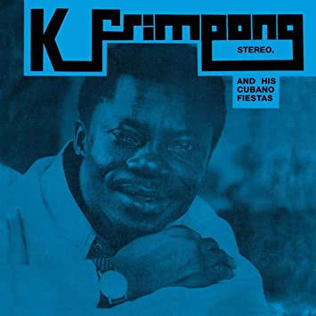

×
Home
Guajeo
Clave
Cantos Populares
Menu
Influencias Afrocubanos en Cantos Populares de Highlife

Kyenkyen Bi Adi Mawu
Rakia
Frema
Komkom de Awurama Badu. Si escuchas atentamente puedes escuchar el ritmo de 2-3 claves